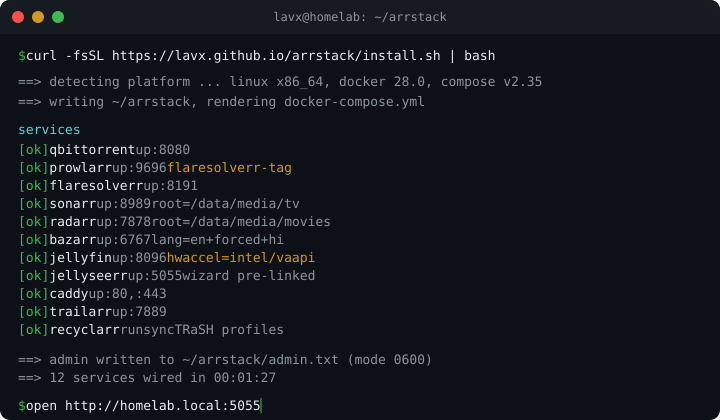

qBittorrent :8080
required
download Client with tv/movies/music/books categories pre-matched to TRaSH paths.
The arr stack, pre-wired. Installs qBittorrent, Prowlarr, Sonarr, Radarr, Bazarr+, Jellyfin, and Jellyseerr on a clean Linux host. No YAML to copy-paste, no wizard tour, no forum threads about Cloudflare tags.
$ curl -fsSL https://lavx.github.io/arrstack/install.sh | bash

$ history | grep -E 'prowlarr|bazarr|jellyseerr' | wc -l → ~400
You pull the images. You open Prowlarr, generate an API key, paste it into Sonarr, paste it again into Radarr. You add eight indexers, forget to tag FlareSolverr at create-time, and every Cloudflare-gated search 403s until you delete and recreate each one. You open Bazarr+, hit its KeyError on audio_exclude, edit the language profile fields, then edit them again for every language. You click through the Jellyfin Startup Wizard. You click through /setup on Jellyseerr, paste a third API key, link libraries by hand. You hand-craft a Caddyfile, guess at the DNS-01 block, watch the cert fail, fix the block.
By the time you request a movie, the evening is gone. arrstack is this weekend, compressed into one binary.
A TUI wizard asks the three questions it cannot guess (storage root, remote access mode, optional extras), then runs unattended.
Download, indexers, arr apps, subtitles, media, requests, proxy, trailers, quality sync. Wired to each other at create-time, not via post-hoc scripts.
From bash to a Jellyseerr tab where the setup wizard has already been bypassed and your account logs in with the admin password in admin.txt.
Each one tracks its upstream :latest image, runs under a stable docker service name on the internal network, and gets credentials handed in at bootstrap so nothing prompts you on first load. Run arrstack update to pull the current tags.
download Client with tv/movies/music/books categories pre-matched to TRaSH paths.
vpn Wraps the download client in a killswitched VPN tunnel. Enabled when you pick a provider (Mullvad, Proton, or custom) and provide WireGuard credentials in the wizard.
indexer Unified indexer manager, eight public indexers pre-added and app-synced to Sonarr and Radarr.
indexer Headless browser that solves Cloudflare challenges, tagged onto gated indexers at create-time.
arr TV manager. Root folder, download client, quality profile wired on first boot.
arr Movie manager, same wiring as Sonarr, pointed at /data/media/movies.
subtitles LavX fork, shipped in place of upstream Bazarr, with OpenSubtitles scraper and OpenRouter translator. Language profiles ship with the fields it needs.
media server Intel, AMD, or NVIDIA hardware transcoding wired from lspci -nn, /dev/dri/renderD128, and nvidia-ctk.
requests Request portal. The four-step bootstrap pre-links Jellyfin so no /setup wizard appears.
reverse proxy Virtual hosts generated per mode (LAN, DuckDNS, Cloudflare) with optional local DNS block.
trailers Pre-roll trailer fetcher linked to Radarr and Sonarr libraries.
quality profiles One-shot container that syncs TRaSH-Guides profiles and custom formats into Sonarr and Radarr, run on a schedule.
Prowlarr gets the FlareSolverr tag when each indexer is created, not retroactively. Cloudflare-gated sites route on the first search.
Every profile ships with audio_exclude, audio_only_include, hi, and forced. Bazarr+ does not crash on a KeyError the first time it scans a library.
Four POSTs to Jellyseerr’s internal API: admin + Jellyfin auth (serverType: 2), library sync, library enable, initialize. The /setup wizard never appears.
Intel VA-API, AMD VA-API, or NVIDIA NVENC auto-detected by parsing lspci -nn, checking /dev/dri/renderD128, and probing nvidia-ctk --version, then wired into the Jellyfin transcoding config.
One shared /data mount across qBittorrent and the arr services, so hardlinks work and seeding torrents do not duplicate disk.
LAN (plain http), DuckDNS (Let’s Encrypt DNS-01 via the DuckDNS plugin), or Cloudflare (wildcard Let’s Encrypt DNS-01 via the Cloudflare plugin, against your domain) with an optional local DNS block. Remote-access modes require a Caddy image that carries the matching DNS plugin.
| LAN only | DuckDNS | Cloudflare | |
|---|---|---|---|
| Who it is for | You never leave the house, or you VPN in. | You want real HTTPS without buying a domain. | You already own a domain and want pretty URLs. |
| Prereqs | None. | Free DuckDNS account + token, Caddy image with the DuckDNS plugin. | Your domain + Cloudflare API token (Zone:DNS:Edit and Zone:Zone:Read), Caddy image with the Cloudflare plugin. |
| What you get | http://host-ip:porte.g. http://192.168.1.20:8096 |
https://sub.duckdns.orge.g. jellyfin.myhome.duckdns.org |
https://sub.yourdomain.tlde.g. jellyfin.yourdomain.net |
| TLS | None (plain HTTP). | Let’s Encrypt via DNS-01 (DuckDNS plugin). | Wildcard Let’s Encrypt via DNS-01 (Cloudflare plugin). |
| Cost | Free. | Free. | Domain registration only. |
:8096 forever, or not.Reach services by host IP and port. Zero setup, zero magic.
http://192.168.1.20:8096
http://192.168.1.20:5055
# boring, but never breaks
The installer runs a dnsmasq container that serves your LAN, so every device resolves *.<your TLD> (wizard default arrstack.local).
address=/arrstack.local/192.168.1.20
address=/jellyfin.arrstack.local/192.168.1.20
# rendered to <install-dir>/config/dnsmasq/dnsmasq.conf
No router access? The installer emits a hosts block in FIRST-RUN.md that you paste into each client machine.
192.168.1.20 jellyfin.arrstack.local
192.168.1.20 sonarr.arrstack.local
# /etc/hosts or C:\Windows\System32\drivers\etc\hosts
arrstack-linux-arm64 binary is shipped alongside x86_64. Tested on Raspberry Pi 5 (8 GB) and a handful of small-form-factor ARM boxes.docker-compose.yml generation. On Synology or Unraid you should keep using their app stores, or SSH into a Linux VM running on the NAS./data/media/tv, /data/media/movies, and /data/media/music. The layout follows TRaSH-Guides so hardlinks between /data/torrents and /data/media work, without doubling disk usage.0600: plain text in ${installDir}/admin.txt for arrstack show-password to read, and in ${installDir}/.env so containers can pick it up on restart. state.json does not contain the password; it only holds API keys, paths, and wizard settings. If the tradeoff is unacceptable, delete admin.txt after first login and store the password in your password manager. Services keep working because their config files already hold the hashed form.Zone:DNS:Edit and Zone:Zone:Read on the single zone. Caddy then issues a wildcard Let’s Encrypt certificate via the DNS-01 challenge. No tunnel daemon, no cloudflared container, no WARP. Port 443 on your box faces the internet directly. For the Caddy caddy-dns/cloudflare plugin to be available, the image is swapped to a build that includes it (the stock caddy:latest image does not).arrstack update runs docker compose pull then docker compose up -d against <install-dir>/docker-compose.yml. Configs, media, and state.json are all untouched. Pass --install-dir if you used a non-default path; otherwise it looks under ~/arrstack.